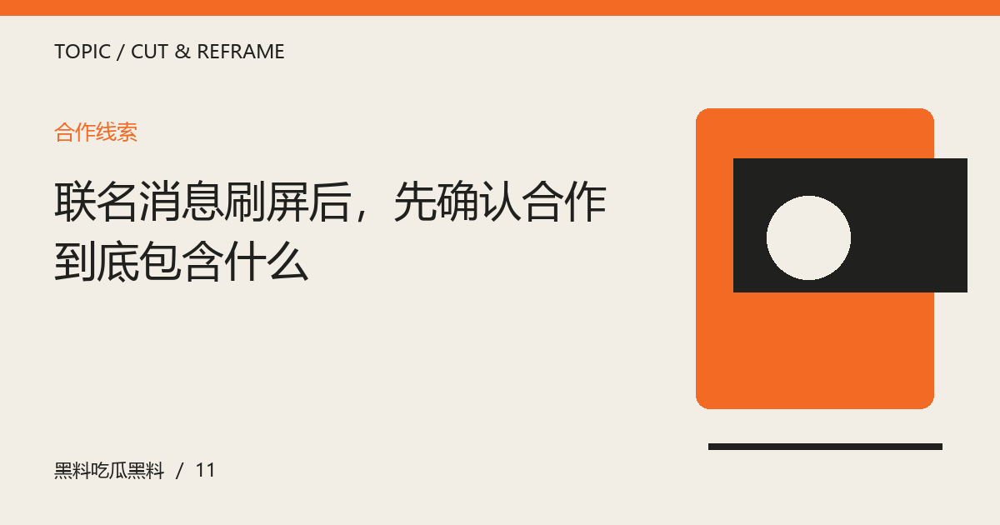

联名消息刷屏后，先确认合作到底包含什么
从公开范围、作品署名与实际呈现理解合作，不把一次同框、一个预告或相似风格扩写成长期关系。

合作名称需要具体范围
联名可能指共同设计、授权图案、联合活动或一次宣传，不同形式承担的工作与表达目标不同。读到消息时，可以先找公开介绍中明确写出的内容，再看参与者怎样署名。不要只根据联名两个字推断所有环节共同完成，更不要将一次项目自动写成长期伙伴关系。清楚范围能够让后续评价针对实际作品，而不是想象中的合作方式。
预告与正式呈现分别记录
预告可能只透露主题和参与方，最终内容还需等待正式说明。若资料没有写明发售、展出或活动安排，就不添加具体日期与效果。正式作品出现后，可以比较它回应了哪些预期，也可以批评表达与宣传存在落差。讨论应保持时间顺序，不能将后来公开的信息反写成早期每个人都已经知道的事实。
欣赏创意不等于替消费背书
视觉风格、人物表达与产品使用是不同问题。观众可以对合作创意感兴趣，也应根据自己的实际需求判断是否参与。未经验证的使用效果、销量或受欢迎程度不应成为文章装饰。若使用假设案例解释合作类型，要清楚标明虚构，不将示例企业包装成真实客户。表达可以丰富，涉及具体能力与结果时仍需有证据。
从共同表达而非私人关系继续看
更有内容的问题可能是双方的创作语言如何结合、哪些元素发生变化，以及作品是否形成新的体验。合作双方的公开发言可以帮助理解目标，但不能替所有观众规定感受。对私人联系没有必要作猜测，工作照片也不足以证明更多。把注意力放回公开产出，能让人物观察拥有长久的资料价值，而不依赖不断制造关系暗示。
编辑演示：本文用于展示专题阅读；虚构情境不构成真实人物或事件报道。
下一篇：引用一段长文时，怎样保留作者真正的意思 →